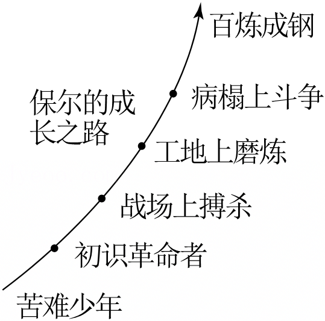

七年级（下）语文期中·参考答案与解析
石家庄市第四十二中学 2024—2025 学年第二学期期中考试
一．选择题（共6小题）
第一部分（18分）
1．（3分）下列词语中加线字的读音完全正确的一项是（ ）
A．字帖（tiè） 殷红（yān） 召唤（zhào） 锋芒毕露（lù）
B．晌午（shǎng） 祈祷（qí） 惶恐（huáng） 鲜为人知（xiān）
C．惩罚（chěng） 卓越（zhuó） 诘问（jié） 妇孺皆知（rǔ）
D．侮辱（wú） 粗拙（zhuó） 憎恶（zēng） 气冲斗牛（dǒu）
【分析】本题考查基础字词的字音。解答此类题型时，一方面要注意在平时的学习中打好字词基础，另一方面在答题时要仔细辨析。
【解答】A.正确。
B.有误，“鲜为人知”的“鲜”应读作“xiǎn”。
C.有误，“惩罚”的“惩”应读作“chéng”，“妇孺皆知”的“孺”应读作“rú”。
D.有误，“侮辱”的“侮”应读作“wǔ”，“粗拙”的“拙”应读作“zhuō”。
故选：A。
【点评】字音是基础部分常考的知识点之一，平时要做好字词积累，答题时认真辨析。
2．（3分）下列词语中没有错别字的一项是（ ）
A．屏嶂 选聘 照像机 大庭广众
B．深宵 取缔 订书机 铤而走险
C．高粱 烦燥 斑马线 鞠躬尽瘁
D．萦绕 振悚 明信片 深恶痛觉
【分析】本题考查基础字词的字形。解答此类题型时，一方面要注意在平时打好字词基础，另一方面在答题时要仔细辨析。
【解答】A.有误，“屏嶂”的“嶂”应为“障”，“照像机”的“像”应为“相”。
B.正确。
C.有误，“烦燥”的“燥”应为“躁”。
D.有误，“振悚”的“振”应为“震”，“深恶痛觉”的“觉”应为“疾”。
故选：B。
【点评】字形是基础部分常考的知识点之一，平时要做好字词积累，答题时认真辨析。
3．（3分）下列各句中，成语运用不恰当的一句是（ ）
A．一个作家不只要有才华，更要有悲天悯人的胸怀，才能写出伟大的作品。
B．托尔斯泰长着这么一张脸，不管从事什么职业，穿什么服饰，也不管在什么场合，都不会有一种鹤立鸡群的可能。
C．小华在期中考试中取得了好成绩，他特别激动，诚惶诚恐地把这个消息告诉了爸爸妈妈。
D．老人从这个小女孩的眼睛中看到了无与伦比的美和更大的力量。
【分析】本题考查成语熟语。成语熟语的常见错误类型有望文生义、重复啰嗦、褒贬误用、谦敬错位、张冠李戴等，解题时要注意辨析词义，联系语境作答。
【解答】A.正确，“悲天悯人”指对社会不幸深表忧虑，符合作家心怀的语境。
B.正确，“鹤立鸡群”形容出众，与托尔斯泰平凡的外貌描述一致。
C.有误，“诚惶诚恐”指惶恐不安，多含贬义或自谦，与“激动”的喜悦情绪不符，用词不当。
D.正确，“无与伦比”指没有能相比的，用于形容小女孩眼睛的美恰当。
故选：C。
【点评】解答此类问题时，一方面要注意在平时打好基础，积累成语的意思，注意区分成语的常见错误用法，如张冠李戴、褒贬误用等，另一方面，答题时要注意联系语境作答，看成语在句中是否合适。
4．（3分）下列句子没有语病的一项是（ ）
A．由于受阴雨天气影响，使得部分地区的天文爱好者没能欣赏到“金星凌日”的奇观。
B．《校车安全管理条例》的实施，可以有效避免校车交通安全事故不再发生。
C．青少年学生正是迷恋书籍，对百科知识孜孜以求的阶段。
D．4月23日是世界读书日，我市图书馆迎来了自开馆以来的第一个借阅高峰。
【分析】本题考查病句的辨析。常见的病句类型有成分残缺、搭配不当、语序混乱、结构混乱、语意不明、成分赘余等。先通读全文，凭语感判断正误，如果不能判断的，可以压缩句子，看搭配是否得当，找出病因。
【解答】A.有误，成分残缺，缺少主语，可删掉“使得”。
B.有误，否定不当，“避免”与“不再”连用导致语义矛盾，可删掉“不再”。
C.有误，搭配不当，“青少年学生”与“阶段”不搭配，可在“学生”后加“时期”。
D.正确。
故选：D。
【点评】解答病句题，一方面要注意积累常见病句类型，掌握每种病句类型的常见设错规律，另一方面在答题时要注意“抓主干，理枝蔓”。
5．（3分）依次填入下面横线上的语句，衔接最恰当的一项是（ ）
绿茶茶艺表演的第九道程序是“春波展旗枪”。 似乎是有生命的绿精灵在跳舞，十分生动有趣。
①尖尖的叶芽如枪，展开的叶片如旗。
②杯中的热水如春波荡漾，在热水的没泡下，茶芽慢慢地伸展开来。
③这道程序是绿茶茶艺的特色程序。
④千姿百态的茶芽在玻璃杯中随波晃动。
⑤直直的茶芽称之为“针”，弯曲的茶芽称之为“眉”，蜷曲的茶芽称之为“螺”。
A．①②④③⑤ B．①④③⑤② C．③②①⑤④ D．③②④①⑤
【分析】此题考查学生的句子排序能力。解答此类题，要求学生平时加强阅读领悟能力的培养，具备较强的逻辑分析能力，通过抓关键词，抓中心句，句与句之间的连接词去逐句推敲。句段的表达顺序主要有空间顺序、时间顺序、逻辑顺序多种，其中逻辑顺序最为复杂，有因果关系、层递关系、主次关系、总分关系、并列关系。
【解答】读语段可首先明晰，应该是“这道程序”承接“第九道程序”，所以可判断③为第一句；②讲“杯中的热水”是“茶艺表演”的第一步，为第二句；①“尖尖的叶芽如枪”承接“茶芽慢慢地伸展开来”，为第三句；⑤“直直的茶芽”承接“尖尖的叶芽”为第四句；④“千姿百态的茶芽”对前几句，领起下句“似乎是有生命的绿精灵在跳舞”，为第五句；
由上分析，可排序为：③②①⑤④
故选：C。
【点评】此题可结合读，通过抓关键词，依据逻辑顺序排列。
6．（3分）下列文化常识的表述不正确的一项是（ ）
A．《孙权劝学》选自北宋司马光主持编写的编年体通史《资治通鉴》，文中的“卿”是古代君对臣的爱称，朋友、夫妇间也以“卿”为爱称。
B．《木兰诗》是南北朝时期北方的一首乐府民歌，后被收录在郭茂倩编的《乐府诗集》中。文中的“可汗”是我国古代西北地区民族对最高统治者的称呼。
C．欧阳修是南宋文学家、政治家，唐宋八大家之一，后人将其与韩愈、柳宗元、苏轼合称为千古文章四大家。
D．《阿长与＜山海经＞》是《朝花夕拾》中的名篇。《朝花夕拾》是鲁迅回忆童年、少年和青年时期不同生活经历与体验的散文集。
【分析】本题考查文学文化常识。解答此类问题时，一方面要注意在平时的课本学习中做好积累，准确记忆相关知识点，另一方面答题时要注意仔细审题，认真辨析。
【解答】ABD.正确。
C.有误，欧阳修是北宋文学家，而非南宋。
故选：C。
【点评】文学文化常识是基础部分常考题型之一，答题时要灵活运用日常学习所积累的知识，仔细辨析。
第二部分（42分）
7．（8分）默写。
与古诗文邂逅是一场美丽的遇见，这场遇见，我们触摸到诗人的情怀：《逢入京使》中诗人遥望故乡，想到亲人远隔，泪雨滂沱，（1） 马上相逢无纸笔 ， 凭君传语报平安 。《竹里馆》中诗人发挥自己新颖而独到的想象力，表达自己僻居深林之中也并不感到孤独（2）“ 深林人不知 ， 明月来相照 ”。李商隐借古讽今，在《贾生》中（3） 可怜夜半虚前席 ， 不问苍生问鬼神 。寄寓自己怀才不遇的感慨；《过松源晨炊漆公店》中杨万里用（4）“ 政入万山围子里 ， 一山放出一山拦 ”告诉我们最好不要为眼前的顺境所迷惑，要放眼长远，认真对待，才能不断克服困难。不同味道勾兑不同人生，让我们浸润于古诗文中，尽情感受百味人生吧！
【分析】本题考查学生对古诗文名句的识记能力。解答此类题目，我们需要在平时的学习中，做好积累，根据提示语句写出相应的句子，尤其要注意不能出现错别字。理解性识记，注意结合语境填充。
【解答】答案：
（1）马上相逢无纸笔 凭君传语报平安
（2）深林人不知 明月来相照
（3）可怜夜半虚前席 不问苍生问鬼神（重点字：虚）
（4）政入万山围子里 一山放出一山拦（重点字：拦）
【点评】为了保证在默写名句时不出错，关键还是平时要加强背诵和记忆，准确书写。下面几种方法可供借鉴。
1．保持良好的心态，培养识记兴趣。
2．多种方式相结合，提高识记效果。
3．提倡使用名句，巩固识记成果。
4．留心特别词句，规避识记误区。
8．（6分）阅读下面诗歌，回答问题。
春夜洛城闻笛 唐 李白 谁家玉笛暗飞声，散入春风满洛城。 此夜曲中闻折柳，何人丕起故园情。 | 泊秦淮 唐 杜牧 烟笼寒水月笼沙，夜泊秦淮近酒家。 商女不知亡国恨，隔江犹唱后庭花。 |
（1）下面对这两首诗的赏析有误的一项是 B
A.“散入春风满洛城”，“满”字运用夸张的修辞手法，极写夜之宁静，笛之悠扬，反衬诗人内心闻笛后的孤寂心情。
B.《春夜洛城闻笛》全诗紧扣一个“闻”字，抒写自己闻笛的感受，表现吹笛人技艺的高超。
C.《泊秦淮》是一首七言绝句，题目“泊秦淮”交代了诗人停泊船只的位置。
D.“烟笼寒水月笼沙”是环境描写，描绘了一幅凄迷的夜景图，为下文抒情作铺垫。
（2）两首诗画线句都选用“曲名”抒情，请说说其抒发的情感有何不同。
【分析】《春夜洛城闻笛》是唐代诗人李白创作的一首诗。此诗抒发了诗人客居洛阳夜深人静之时被笛声引起的思乡之情，其前两句描写笛声随春风而传遍洛阳城，后两句写因闻笛而思乡。全诗扣紧一个“闻”字，抒写诗人自己闻笛的感受，合理运用想象和夸张，条理通畅，感情真挚，余韵无穷。
《泊秦淮》是诗人夜泊秦淮时触景感怀之作，前半段写秦淮夜景，后半段抒发感慨，借陈后主（陈叔宝）因追求荒淫享乐终至亡国的历史，讽刺那些不从中汲取教训而醉生梦死的晚唐统治者，表现了作者对国家命运的无比关怀和深切忧虑的情怀。全诗寓情于景，意境悲凉，感情深沉含蓄，语言精当锤炼，艺术构思颇具匠心，写景、抒情、叙事有机结合，具有强烈的艺术感染力。
【解答】（1）本题考查对诗歌的理解与鉴赏。
ACD.正确；
B.有误，诗歌前两句描写笛声随春风而传遍洛阳城，后两句写在客居之夜听到《折杨柳》的曲子，谁又能不生出怀念故乡的愁情呢，诗人因闻笛而思乡，并未“表现吹笛人技艺的高超”；
故选：B。
（2）本题考查比较阅读。《春夜洛城闻笛》中“此夜曲中闻折柳，何人不起故园情”意为：客居之夜听到《折杨柳》的曲子，谁又能不生出怀念故乡的愁情？折柳：即《折杨柳》笛曲，乐府“鼓角横吹曲”调名，内容多写离情别绪，曲中表达了送别时的哀怨感情。《折杨柳》曲伤离惜别，其音哀怨幽咽，不经意间激发了诗人的思乡愁绪，可见感触之深，思乡之切。《泊秦淮》中“商女不知亡国恨，隔江犹唱后庭花”句意为：卖唱的歌女不知道什么是亡国之恨，隔着江水仍在高唱着《玉树后庭花》。后庭花：歌曲《玉树后庭花》的简称，后世把此曲作为亡国之音的代表。“犹唱”二字上溯历史，说明沉湎酒色的挥霍者古已有之，下照现实，揭示了当今的达官贵人像陈后主一样挥霍无度，如此下去必将亡国，表达出诗人的振聋发聩的警示，抒发了对国家和人民深切的担忧之情。
答案：
（1）B
（2）《春夜洛城闻笛》中“折柳曲”是思乡曲，写出诗人对故乡的思念之情；《泊秦淮》“后庭花”是亡国之音，诗人借古讽今，写出对统治者不思朝政、整日醉生梦死的生活的批判。
译文：
春夜洛城闻笛
是谁家精美的笛子暗暗地发出悠扬的笛声？随着春风飘扬，传遍洛阳全城。就在今夜的曲中，听到故乡的《折杨柳》，哪个人的思乡之情不会因此而油然而生呢？
泊秦淮
浩渺寒江之上弥漫着迷蒙的烟雾，皓月的清辉洒在白色沙渚之上。入夜，我将小舟泊在秦淮河畔，临近酒家。金陵歌女似乎不知何为亡国之恨黍离之悲，竟依然在对岸吟唱着淫靡之曲《玉树后庭花》。
【点评】古诗词鉴赏考查内容主要有：1、鉴赏作品的形象、语言、表达技巧。2、评价作品的思想内容鉴赏作品的形象、语言、表达技巧，在命题上可以是综合要求，也可以就某一方面提出问题，也可能和评价作品的思想内容结合起来考查。因此，我们要全面提高鉴赏能力，不能有偏废。
9．（10分）阅读下面两篇文言文，回答问题。
卖油翁
欧阳修
陈康肃公善射，当世无双，公亦以此自矜。尝射于家國，有卖油翁释担而立，睨之久而不去。见其发矢十中八九，但微颔之。
康肃问曰：“汝亦知射乎？吾射不亦精乎？”翁曰：“无他，但手熟尔。”康肃忿然曰：“尔安敢轻吾射！”翁曰：“以我酌油知之。”乃取一葫芦置于地，以钱覆其口，徐以杓酌油沥之，自钱孔入，而钱不湿。因曰：“我亦无他，惟手熟尔。”康肃笑而遣之。
伤仲永
王安石
金溪民方仲永，世隶耕。仲永生五年，未尝识书具，忽啼求之。父异焉，借旁近与之，即书诗四句，并自为其名。其诗以养父母、收族为意，传一乡秀才观之。自是指物作诗立就，其文理皆有可观者。邑人奇之，稍稍宾客其父，或以钱币乞之。父利其然也，日扳仲永环谒于邑人，不使学。
余闻之也久。明道中，从先人还家，于舅家见之，十二三矣。令作诗，不能称前时之闻。又七年，还自扬州，复到舅家问焉。曰：“泯然众人矣。”
（1）下列句中加线词解释有误的一项是 D
A.以我酌油知之 | 以：介词，凭，靠 |
B.于舅家见之 | 于：介词，在 |
C.释担而立 | 释：放下 |
D.邑人奇之 | 奇：神奇 |
（2）翻译下列句子。
①康肃忿然曰：“尔安敢轻吾射！”
②自是指物作诗立就，其文理皆有可观者。
（3）有人认为“天赋决定人生”，也有人认为“努力比天赋更重要”。请结合甲乙两文，谈谈你的看法。
【分析】《卖油翁》翻译：陈尧咨擅长射箭，当时世上没有人能和他相比，他也凭着这一点自夸。（他）曾经在自己家的园子里射箭，有个卖油的老翁放下担子，站在一旁，斜着眼看他射箭，很久不离开。（老翁）看到陈尧咨射出的箭十支能中八九支，只是微微地点点头。
陈尧咨问道：“你也懂得射箭吗？我的箭法不是很高明吗？”老翁说：“没有别的（奥妙），只是手法熟练罢了。”陈尧咨听后气愤地说：“你怎么敢轻视我射箭的本领！”老翁说：“凭我倒油（的经验）就可以懂得这个道理。”于是老翁取出一个葫芦放在地上，用一枚铜钱盖住葫芦的口，慢慢地用勺子倒油（通过铜钱方孔）注到葫芦里，油从铜钱的孔中注进去，却没有沾湿铜钱。接着老翁说：“我也没有别的（奥妙），只不过是手熟练罢了。”陈尧咨笑着将他打发走了。
《伤仲永》翻译：金溪县有个百姓叫方仲永，世代以耕田为业。仲永长到五岁时，不曾认识书写工具，（有一天）忽然哭着要这些东西。父亲对此感到诧异，从邻近人家借来给他，（仲永）当即写了四句诗，并且题上自己的名字。这首诗以赡养父母、团结同宗族的人为内容，传送给全乡的秀才观赏。从此，指定事物让他作诗，（他）能立刻完成，诗的文采和道理都有值得欣赏的地方。同县的人对这件事感到很惊奇，渐渐地都以宾客之礼对待他的父亲，有的人花钱求取仲永的诗。方仲永父亲认为这样有利可图，就每天拉着仲永四处拜访同县的人，不让他学习。
我听到这件事很久了。明道年间，我跟随先父回到家乡，在舅舅家里见到他，（他已经）十二三岁了。叫（他）写诗，（他写的诗）已经不能与从前的名声相称。又过了七年，（我）从扬州回来，再次到舅舅家去，问起方仲永的情况，（回答）说：“（他的才能）已经完全消失，成为普通人了。”
【解答】（1）本题考查理解文言词语。
ABC.正确。
D.有误，“邑人奇之”中“奇”应是意动用法，应解释为“对……感到惊奇”，而不是“神奇”，该项解释有误。
故选：D。
（2）本题考查翻译句子。
①重点词语含义：忿然，气愤的样子；尔，你；安，怎么；轻，轻视；射，动词作名词，射箭的本领。翻译：陈尧咨气愤地说：“你怎么敢轻视我射箭的本领！”
②重点词语含义：自是，从此；立就，立刻完成；文理，文采和道理；可观，值得欣赏。翻译：从此，指定事物让他作诗，（他）能立刻完成，诗的文采和道理都有值得欣赏的地方。
（3）本题考查个性化阅读。
从《卖油翁》看：陈康肃公射箭技艺高超，“当世无双”，这是他的天赋优势，但他却因此自矜。而卖油翁虽然看似平凡，却能通过长期倒油练习，做到“徐以杓酌油沥之，自钱孔入，而钱不湿”，这表明后天的努力练习可以让普通人达到很高的技能水平，说明努力比天赋更重要。从《伤仲永》看：方仲永五岁时就能“指物作诗立就，其文理皆有可观者”，天赋极高，堪称神童。然而，其父“利其然也，日扳仲永环谒于邑人，不使学”，最终仲永“泯然众人矣”。这说明即使有天赋，如果不通过后天的学习和努力，天赋也会逐渐消失，进一步强调了努力的重要性。综合观点：天赋固然重要，它能给人一定的基础和优势，但后天的努力才是决定一个人能否取得成功的关键因素。只有通过不断地努力学习和实践，才能将天赋发挥到极致，否则天赋也可能被埋没。
答案：
（1）D
（2）①陈尧咨气愤地说：“你怎么敢轻视我射箭的本领！”
②从此，指定事物让他作诗，（他）能立刻完成，诗的文采和道理都有值得欣赏的地方。
（3）示例：我认为努力比天赋更重要。陈康肃公虽有射箭天赋却自矜，卖油翁通过努力练习技艺精湛；方仲永天赋极高却因不学习而“泯然众人矣”。天赋是基础，但努力才能决定成功。
【点评】在文言文翻译过程中，需要遵循“信、达、雅”的标准；遵循“直译为主，意译为辅，字字落实，文从句顺”原则。文言文常用翻译方法有“留、删、换、调、补、贯”。
1.留：古今意义相同的词和地名、官职等专有名词保留。
2.删：无意义或没必要翻译的词删去。
3.换：单音词换成双音词，换活用后的词，通假字换成本字。
4.调：特殊句式按现代汉语要求调整为正常句式。
5.补：补充出省略部分。
6.贯：结合语境，贯通翻译。
10．（13分）现代文阅读。
微弱的光亮
黄海子
①晚上7点，我在盘山公路上开着车。山路上的雾浓得化不开，车子像一只蚂蚁掉进了装满牛奶的杯子。车的灯光在大雾里，照不见一米开外的物体。而一团一团的雾在灯光里缓慢地翻滚着，仿佛众多的棉絮在亮光中漫舞。
②我们此行的车上共有三人。我把车停在路边，下了车，坐在副驾驶的大姐也随我下了车。“这天气真是的……”大姐说。“要不我们回吧？这大雾硝实不能再往前了。”我对大姐说，大姐沉默着。
③没有风，路边看不见的树滴滴答答地滴着水。公路上除了我这辆车，再没有车驶过。我感觉浓雾里那些细小的雾的颗粒，慢慢地钻透我的衣服，贴上我的皮肤，我感觉到了隆冬才有的寒冷。而滴答的水声，让整个夜显得孤寂又没有生气。
④大姐是我不久前才认识的，60岁左右，人清瘦但很精神，我们同在一个助学群里。我们此行是去山里的一所学校开展调查，调查那里有多少孩子需要资助。
⑤我们在小镇上吃午饭的时候，同行的另一个人告诉我，他是冲着大姐的“精神”才来参加这次活动的。他说，大姐早就退休了，老公走得早，孩子在国外生活，接她去国外定居，她去了不喜欢那边的生活，一个人跑回国来了。跑回来的原因还有一个，她想聚一帮人，在她有生之年；资助一些需要资助的学生。
⑥车上的人见我和大姐有一阵没说话了，使放下车窗喊我们：“大姐，你们两个上车来商量。”我和大姐上了车。
⑦大姐问我：“导航上我们离目的地还有多远？”我说：“还有5公里国道、3公里村道。要是没有雾，要不了多少时间就能到达。”同行的另一人搭话：“我们往回走，到镇上有多远？”我说：“距离与到目的地差不多。”大姐见我们都想要返回，急忙说：“不能返回！”我和同行者异口同声地问：“为什么？”大姐说：“两个原因。一是我们出发前给学校的老师打了电话，叫他把需要资助的孩子和孩子家长都叫到了学校。山里孩子的家离学校都不近，答应了他们，就要守信。还有一个原因，明天一早我们还要去别的地方调查，我们拖一天，其他学校的孩子就会多一天期盼。”
⑧大姐说完沉默了一会儿，转过身对坐在后面的同行者说道：“你不会开车，我虽然会开，但是眼睛不好，这样吧，我们两个下车去用手机电筒给车照路，连着车灯的光，我想应该看得见路，我们能早些到。”然后对着我说：“你慢慢开车跟着我俩，你看如何？”
⑨我不同意，决意要大姐开车。最后大姐生气地说：“我知道你为我好，可是我眼睛真的不行了，从车玻璃看出去只看得到雾，一点路面都看不到，所以这车必须得你开。”
⑩正当大姐和同行者下车准备给我照路的时候，大姐的电话响了。是学校那边打过来的。大姐在电话里说：“不用不用。我们在公路上，雾是很大，我们开得慢，麻烦你们多等我们一会儿，不用来接我们，更不用来给我们照亮，我们开慢些就行，我们一定会到……”大姐接完电话，就下车给我照路去了。
⑪我随着大姐的身影，慢慢地开车往前行。凭脚下加油的力度，我断定我们到了一个很陡的上坡路。突然，我看见大姐的身子一晃，整个人栽倒下来，朝着车头滚了过来。我吓得有些手足无措，急忙停车去查看状况。准备扶大姐的时候，她自己却站起来，嘴里嘟哝着：“这该死的石子，我踩石子上了，溜了脚。”
⑫大雾里，大姐身裹雾气，拍了拍身子，倔强地继续探路。在她拍身子的时候，那些裹在她身上的雾变得缥缈起来。
⑬我刚上车，恍惚听到了呼喊大姐名字的声音。再仔细听，是很多声音在呼喊大姐。慢慢地，有微弱的光亮从陡玻往下缓缓下来。先是昏黄的几颗，然后是昏黄的裹着雾的大团，继而是几大束，在雾气里格外明了。
⑭是老师、学生、学生家长来接我们了。那段被雾埋没的路，一下子就明亮宽敞起来，我的眼睛却因为他们的到来而模糊了……
⑮多年后，大姐在大雾里说的一句话，一直像那‘天大雾里的微光一样照亮我前行的路。
⑯她说：“哪怕微弱得只有丁点的光亮，连起来，就能照亮人前行。”
（1）通读全文，说说题目“微弱的光亮”的含义。
（2）第⑤段从记叙顺序上来看属于 插叙 ，其作用是 补充大姐情况，为后文情节铺垫，凸显其性格 。
（3）简要概括文中大姐形象的主要特点。
（4）比较阅读下面两段文字，完成表格。
环境描写 | 主要作用 | 探究小结 |
山路上的雾浓得化不开，车子像一只蚂蚁掉进了装满牛奶的杯子。车的灯光在大雾里，照不见一米开外的物体，而一团一团的雾在灯光里缓慢地翻滚着，仿佛众多的棉絮在亮光中漫舞。 | ① 渲染恶劣天气，突出行车困难，为后文铺垫，烘托焦急心情。 | ②请对如何写好环境描写提出一点建议。 |
天上闪烁的星星好像黑色幕上缀着的宝石，它跟我们这样的接近哪！黑的山峰像巨人一样矗立在面前。四围的山把这山谷包围的像一口井。（节选自《老山界》） | 交代时间是夜晚，写出星空的灿烂美丽和山势的险峻，暗示了红军的艰难处境，烘托出作者的乐观主义精神。 | |
【分析】文章通过讲述“我”与大姐等人在大雾天气中前往山里学校开展资助调查的经历，展现了大姐信守承诺、关爱孩子、执着坚毅的品质，以及众人相互帮助的温暖场景，同时借“微弱的光亮”传达出只要人人献出一点爱，微小力量汇聚就能照亮前行道路的主题。
【解答】（1）本题考查题目的含义。
表层含义：指大雾中大姐和同行者用手机电筒发出的光，以及后来老师、学生、学生家长来接时带来的昏黄灯光，这些在大雾中显得微弱的光亮，照亮了被雾埋没的路。文中“大姐和同行者下车准备给我照路”“慢慢地，有微弱的光亮从陡坡往下缓缓下来。先是昏黄的几颗，然后是昏黄的裹着雾的大团，继而是几大束，在雾气里格外明了”等语句体现了这一含义。深层含义：象征着生活中那些看似微小的善举、爱心和信念等力量。就像大姐坚持前往学校、众人相互帮助的行为，如同微弱的光亮，却能给他人带来温暖和希望，照亮人们前行的道路。大姐所说的“哪怕微弱得只有丁点的光亮，连起来，就能照亮人前行”点明了这一深层含义。
（2）本题考查记叙顺序及作用的分析。
记叙顺序：插叙。作用：补充交代了大姐的基本情况，包括她退休、丈夫早逝、孩子在国外等信息，以及她回国组织资助学生活动的原因，使读者对大姐这一人物形象有更全面深入的了解，丰富了文章内容，也为后文大姐坚持前往学校开展资助调查的情节做了铺垫，体现出她热心公益、关爱孩子的性格特点。如“大姐早就退休了，老公走得早，孩子在国外生活，接她去国外定居，她去了不喜欢那边的生活，一个人跑回国来了。跑回来的原因还有一个，她想聚一帮人，在她有生之年，资助一些需要资助的学生”。
（3）本题考查人物形象的分析。
信守承诺：出发前答应学校老师会去，即便遇到大雾天气，也坚决不返回，认为答应了就要守信。文中大姐说“一是我们出发前给学校的老师打了电话，叫他把需要资助的孩子和孩子家长都叫到了学校。山里孩子的家离学校都不近，答应了他们，就要守信”体现了这一点。关爱孩子：退休后组织资助学生的活动，担心拖延会让其他学校的孩子多一天期盼，坚持要尽快到达学校开展调查。从“还有一个原因，明天一早我们还要去别的地方调查，我们拖一天，其他学校的孩子就会多一天期盼”可以看出。执着坚毅：在大雾中，不顾自身不便，坚持下车用手机电筒给车照路，摔倒后仍倔强地继续探路。如“大姐身裹雾气，拍了拍身子，倔强地继续探路”。善解人意：理解“我”不让她开车是为她好，同时也能为他人考虑，不想给学校老师等人添麻烦，拒绝他们来接和照亮。像“我知道你为我好，可是我眼睛真的不行了”“不用不用。我们在公路上，雾是很大，我们开得慢，麻烦你们多等我们一会儿，不用来接我们，更不用来给我们照亮，我们开慢些就行，我们一定会到”等语句能体现。
（4）本题考查环境描写的作用及知识要点的总结。
①渲染了大雾天气的恶劣，突出了行车的困难，为后文情节发展作铺垫，烘托出“我们”焦急、担忧的心情。文中“山路上的雾浓得化不开，车子像一只蚂蚁掉进了装满牛奶的杯子。车的灯光在大雾里，照不见一米开外的物体”等描写，强调了雾的浓重，使得出行变得艰难，从而引发了后文关于是否返回以及如何前行的情节，同时也体现了“我们”面对这种恶劣天气时的不安。
②写好环境描写可以紧扣主题，通过细腻描绘环境特点来烘托氛围、衬托人物心情或为情节发展作铺垫。比如本文中对大雾的描写，就与出行困难、人物抉择等情节紧密相关，还烘托出“我们”当时的心境；也可以运用多种修辞手法，如比喻、拟人等，增强描写的生动性和感染力，像文中“车子像一只蚂蚁掉进了装满牛奶的杯子”“雾在灯光里缓慢地翻滚着，仿佛众多的棉絮在亮光中漫舞”等语句，使环境描写更具画面感。
答案：
（1）表层指大雾中手机电筒光和众人来接的灯光；深层象征微小善举、爱心等能照亮前行路的力量。
（2）插叙；补充大姐情况，为后文情节铺垫，凸显其性格。
（3）信守承诺、关爱孩子、执着坚毅、善解人意。
（4）①渲染恶劣天气，突出行车困难，为后文铺垫，烘托焦急心情。②紧扣主题，运用多种修辞手法等。
【点评】理解文章的主要内容，阅读文章时要从整体到部分再到整体，即初读文章，了解大意后，再理解字词，读懂每句话，给文章分段和归纳段意，最后回到文章整体上来，进而抓住文章的主要内容，并概括中心思想。概括文章的主要内容，就是要搞清楚全文主要讲的是什么，只有掌握了文意的主要内容，才能正确领会文章的中心思想。
11．（5分）我校开展了“阅读绘青春”经典重读活动，请你阅读以下经典文段，完成任务。
青春获得了胜利。伤寒没能夺走保尔的生命。这已是他第四次死里逃生。卧床一个月之后，苍白消瘦的保尔已能够勉强站起来，颤巍巍地扶着墙壁，试着在房间里走动了。他让母亲搀扶着走到窗口，向街上望了很久。雪已开始融化，雪水汇成的小水洼在阳光下闪闪发亮。外面已经是冰雪消融的早春天气了。
（节选自《钢铁是怎样炼成的》第二部第三章）
（1）选段中说的“第四次死里逃生”，与“保尔的成长之路”导图中对应的一个阶段是 D （填写字母）

A.初识革命者
B.战场上搏杀
C.工地上磨炼
D.病榻上斗争
（2）同学们在经典阅读过程中主动将所学名著前后勾连起来比较，以下是他们的研究成果。请你相互参照，完成A、B两项任务。
理一理故事情节 |
《骆驼祥子》 | 《钢铁是怎样炼成的》 |
①省吃俭用攒钱准备买车，攒的钱被孙侦探夺走。 ②攒钱买了一辆车，连人带车被大兵抓去。 ③虎妞帮祥子买车，后置办虎妞的丧事卖车。 A正确顺序： ②①③ （填序号） | ①激战中被炮弹击中头部。 ②筑路时，得了伤寒并引发了肺炎。 ③为救朱赫来被抓入狱，后被错放。 ④偷居住在邻居家德国中尉的枪，用破布裹好后藏在烧砖炉靠里面的角落里，用旧砖块堆成锥形覆盖好。 B正确顺序： ④③①② （填序号） |
【分析】小说以北平（今北京）一个人力车夫祥子的行踪为线索，以二十年代末期的北京市民生活为背景，以人力车夫祥子的坎坷、悲惨的生活遭遇为主要情节，深刻揭露了旧中国的黑暗，控诉了统治阶级对劳动者的剥削、压迫，表达了作者对劳动人民的深切同情，向人们展示军阀混战、黑暗统治下的北京底层贫苦市民生活于痛苦深渊中的图景。
【解答】（1）本题考查名著情节。
题目提到选段是保尔“第四次死里逃生”，需要从“保尔的成长之路”导图中选对应的阶段。保尔是因为伤寒生病卧床，之后康复，这明显是与疾病作斗争的情节。
A选项“初识革命者”，主要是保尔开始接触革命思想相关情节，和生病无关，不符合。
B选项“战场上搏杀”，是保尔在战场上战斗的阶段，不是生病，不符合。
C选项“工地上磨炼”，是保尔在艰苦的工地环境中工作，不是因为生病，不符合。
D选项“病榻上斗争”，与选段中保尔和伤寒作斗争的情节相符。
故选：D。
（2）本题考查名著情节。
对于《骆驼祥子》中祥子买车的情节顺序，我们来逐一分析。祥子最初是攒钱准备买车，但是攒的钱被孙侦探夺走，这是他第一次买车计划破灭，对应①。后来他攒钱买了一辆车，结果连人带车被大兵抓去，这是第二次买车受挫，对应②。最后虎妞帮祥子买车，但是为了置办虎妞的丧事又把车卖了，对应③。所以《骆驼祥子》情节的正确顺序是②①③。
对于《钢铁是怎样炼成的》中保尔的情节顺序：
保尔首先是为救朱赫来被抓入狱，后被错放，这是他早期的革命经历，对应③。
接着在激战中被炮弹击中头部，这是他在战场上的遭遇，对应①。
然后在筑路时，得了伤寒并引发了肺炎，这和前面选段中生病情节相关，对应②。
偷德国中尉的枪是他早期的一个小事件，对应④。
所以《钢铁是怎样炼成的》情节的正确顺序是④③①②。
答案：
（1）D；
（2）A：②①③；
B：④③①②。
【点评】名著考查所涵盖的内容非常多，既有文学文化常识也有作品主题、人物形象、故事情节、写作特色类，还有对作品的品读、分析等。解答这类题，要对名著的精彩内容，经典情节以及人物形象牢记，这样可以轻松解答。
第三部分（40分）
12．（40分）阅读下面材料，按照要求作文。
生命中的遇见总是能够引发我们的万千感慨。吕蒙遇见孙权，孙权以远见点醒迷津，让赳赳武夫蜕变为学识通达的儒将；迅哥儿遇见了《山海经》，如遇着了一个霹雳似的开启了一个奇幻的世界；光未然遇见了黄河，胸腔里澎湃起万丈家国情……遇见的，也许是一个人，也许是一本书，也许是一处曼妙的风景……正是人间四月天，值此芳菲时节，请你执笔记下生命里那次动人的遇见吧！
请以“遇见”为题目，写一篇文章。
要求：①文章思想健康，内容充实，感情真挚；②不要套作，不得抄袭；③除诗歌外，文体不限；④字迹工整，书写规范，不少于600字；⑤请不要出现真实的姓名、班名。
【分析】本题考查命题作文。从审题立意来看，“遇见”这一题目聚焦于生命中那些具有特殊意义、引发内心深刻感触的相遇瞬间。核心在于展现遇见的对象如何触动心灵、带来改变或感悟，立意需传递积极向上的情感与思考，如成长、启迪、对美好事物的热爱等。选材构思上，可从不同维度选取素材。若写遇见人，可写良师益友的鼓励让自己走出困境；若写遇见物，如一本旧书，回忆与之相伴的时光，书中的智慧给予自己力量；若写遇见景，如故乡的麦田，描绘麦田四季变化，抒发对故乡的眷恋。写作时，先以生动的场景描写引出遇见，中间详细叙述遇见的过程与细节，突出情感变化，结尾升华主题，表达遇见带来的深远影响，让读者产生共鸣。
【解答】
遇见
于时光长河中徘徊，我曾以为生活不过是日复一日的平淡，直到那次遇见，如一道光，照亮了我黯淡的世界。
那是一个寻常的午后，阳光慵懒地洒在旧书店的招牌上。我本只是随意逛逛，却在角落里与一本破旧的《飞鸟集》不期而遇。它的封面已有些磨损，纸张也微微泛黄，却仿佛有一种无形的魔力，吸引着我将它拿起。
翻开书页，泰戈尔那灵动的诗句如潺潺溪流，淌入我的心田。“生如夏花之绚烂，死如秋叶之静美”，简单的话语，却道尽了生命的真谛。我仿佛置身于一个充满诗意与哲思的世界，那些平日里被琐碎生活掩盖的情感，在这一刻被轻轻唤醒。
我遇见了一个全新的自己，一个不再被浮躁与迷茫笼罩的自己。以往，我总是匆匆忙忙，为了学业、为了成绩而奔波，却忽略了生活中那些细微的美好。而此刻，在这小小的书店角落，在这本旧书的陪伴下，我学会了停下脚步，用心去感受每一个瞬间。
我开始留意路边绽放的小花，它们在微风中轻轻摇曳，像是在诉说着生命的故事；我开始倾听鸟儿欢快的歌声，那是大自然最美的乐章；我开始珍惜与家人朋友相处的时光，那些平凡的瞬间，因为有了爱与温暖，变得无比珍贵。
遇见《飞鸟集》，也让我对文字有了更深的热爱。我尝试着用文字记录下生活中的点点滴滴，用笔尖描绘出内心的感受。每一次写作，都是一次与自己的对话，也是一次与美好事物的邂逅。
如今，那本《飞鸟集》依然静静地躺在我的书桌上，每当看到它，我都会想起那个改变我的午后。它就像一位无声的挚友，在我迷茫时给予我指引，在我失落时给予我慰藉。
这次遇见，是生命馈赠给我的珍贵礼物。它让我明白，生活中从不缺少美，而是缺少发现美的眼睛。只要我们用心去感受，每一次遇见，都可能成为照亮我们前行道路的光。
【点评】这篇文章围绕“遇见”《飞鸟集》展开，语言优美，富有诗意。生动描绘了遇见旧书时的情景，细腻阐述遇见给自己带来的心灵触动与改变，如学会感受生活、热爱文字等，情感真挚自然，将遇见的意义诠释得较为深刻，能引发读者共鸣。
声明：试题解析著作权属菁优网所有，未经书面同意，不得复制